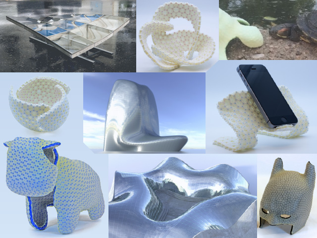
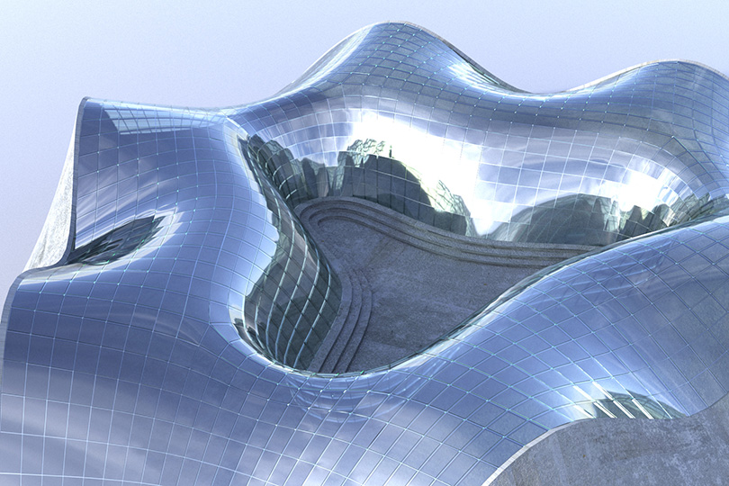
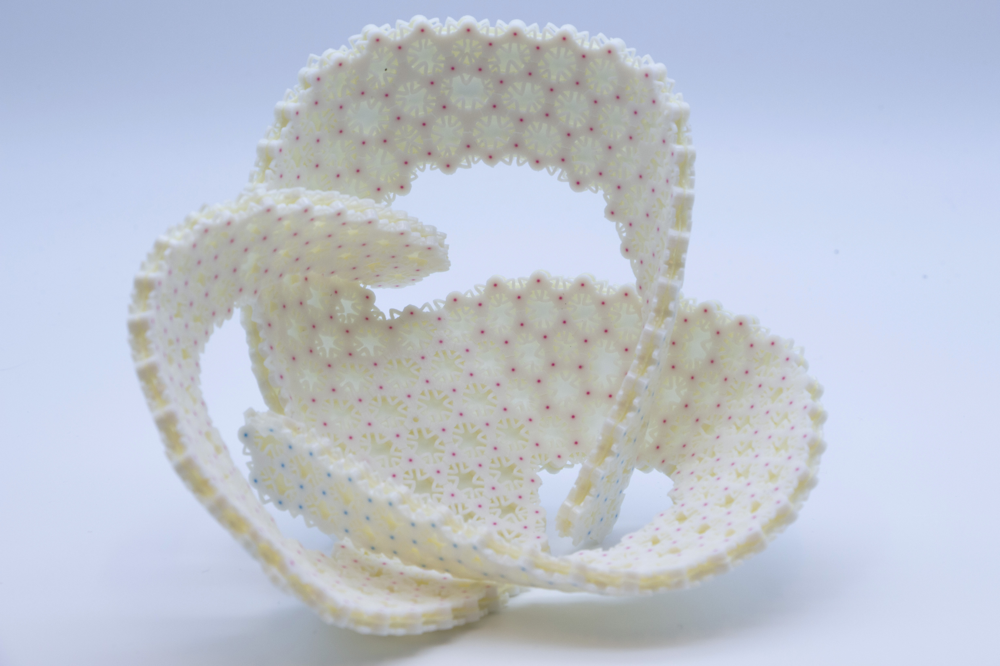
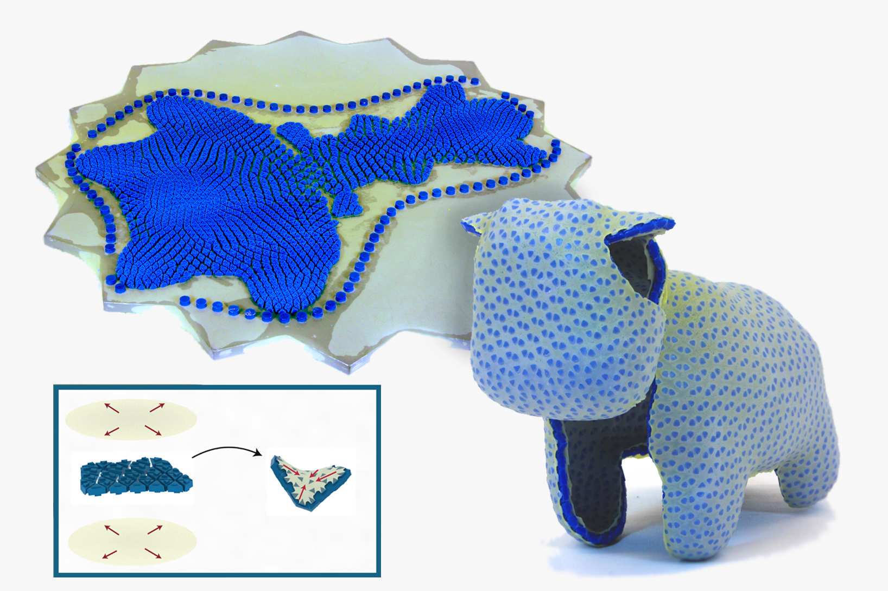

ruslan.guseinov (AT) ist.ac.at
I am a Postdoc at IST Austria working in the Computer Graphics and Digital Fabrication lab under the supervision of Bernd Bickel.
|  |
Computational design of curved thin shells: from glass façades to programmable matter |
|  |
Computational Design of Cold Bent Glass Façades |
|  |
Programming temporal morphing of self-actuated shells |
|  |
CurveUps: Shaping Objects from Flat Plates with Tension-Actuated Curvature |
| 2020 | ScienceDaily | Bend, don't break: New tool enables economic glass design |
| 2020 | Die Presse | Gegenstände, die sich von selbst formen |
| 2017 | Le Monde | Origami et latex pour une nouvelle impression 3D |
| 2017 | DesignNews | Flat Printable Sheets Self Transform Into Shaped Objects |
| 2017 | 3dprint.com | IST Austria Researchers Develop CurveUps: Self-Actuating 3D Printed Objects |
| 2017 | phys.org | Computer scientists design flat sheets that transform themselves into smooth-surfaced, free-form objects |
| 2017 | ScienceDaily | Flat sheets transform themselves into smooth-surfaced, free-form objects |
| 2017 | MaterialsToday | Throw it a curve and 2D becomes 3D |